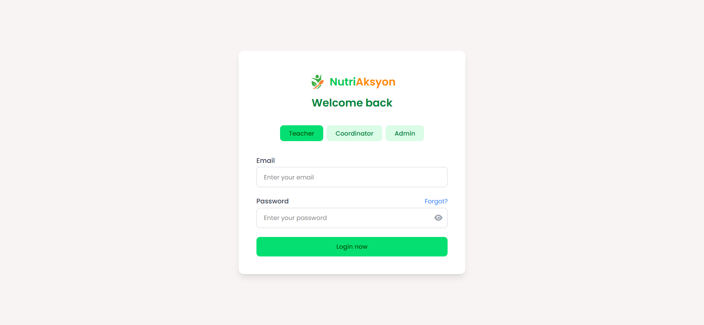
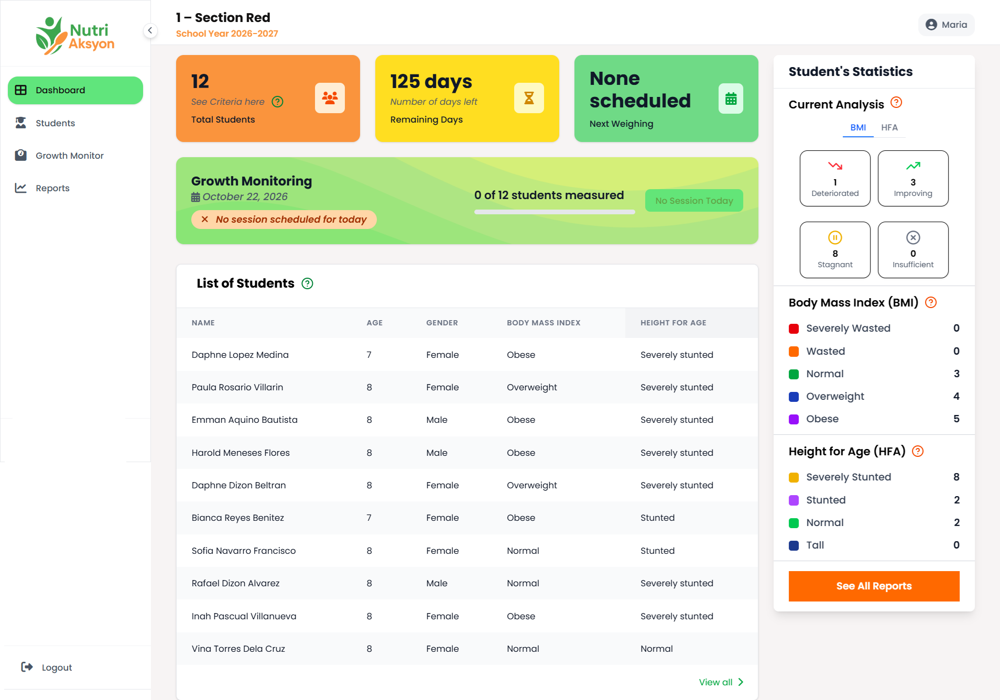
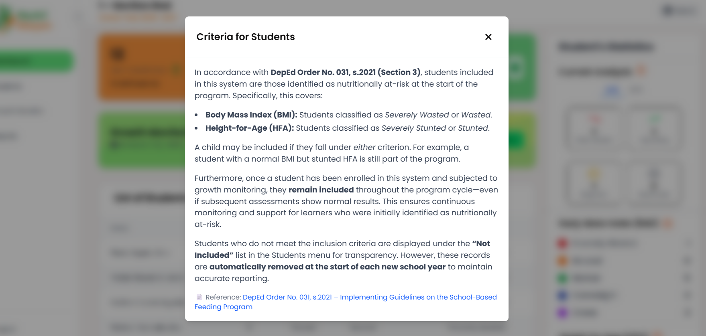
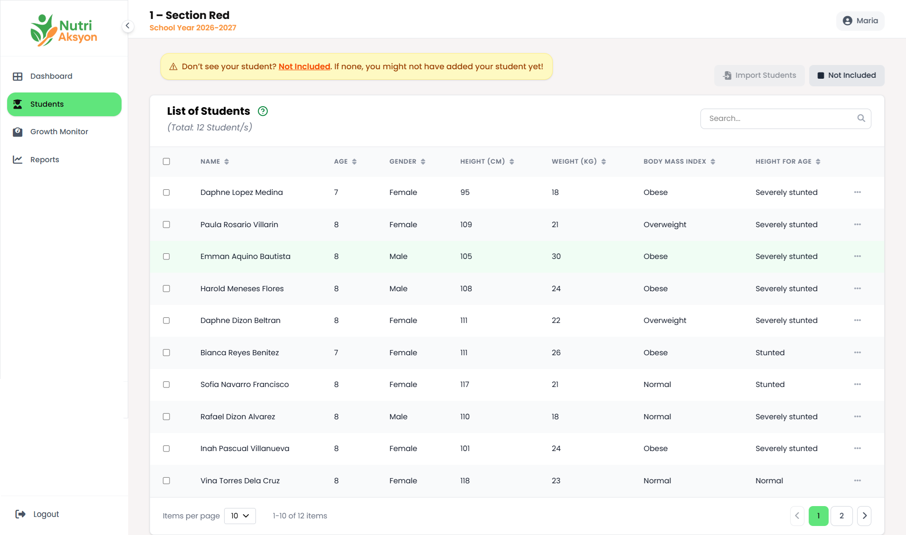
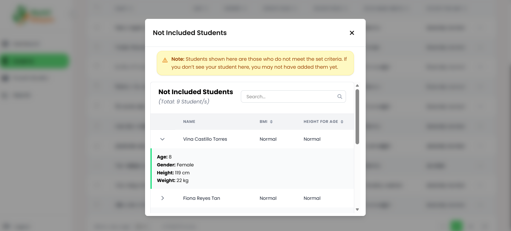
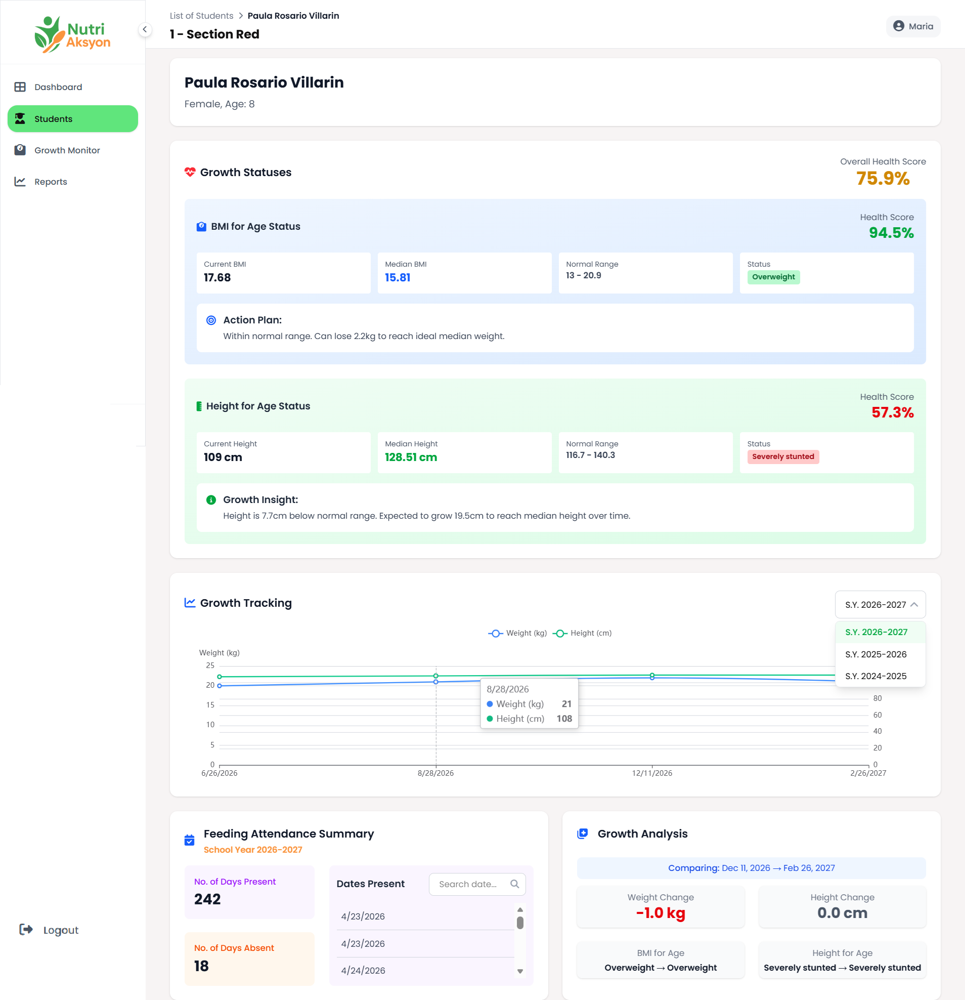
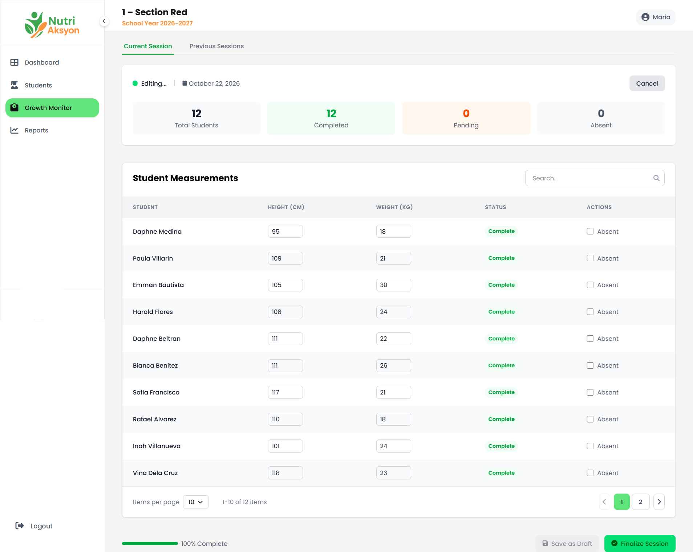
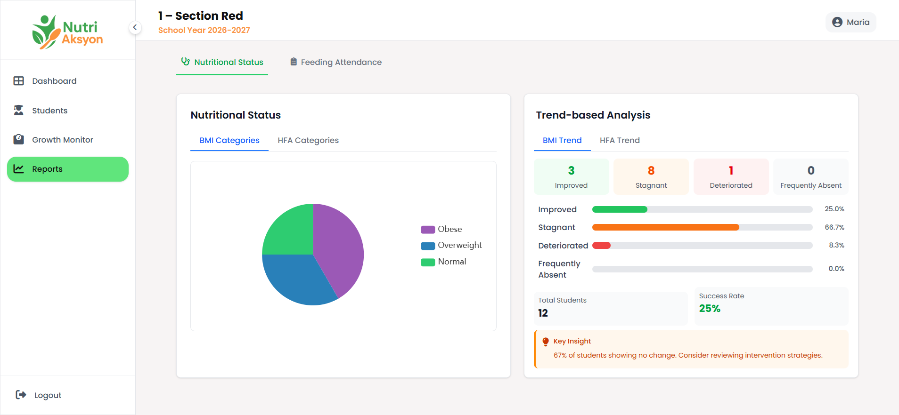
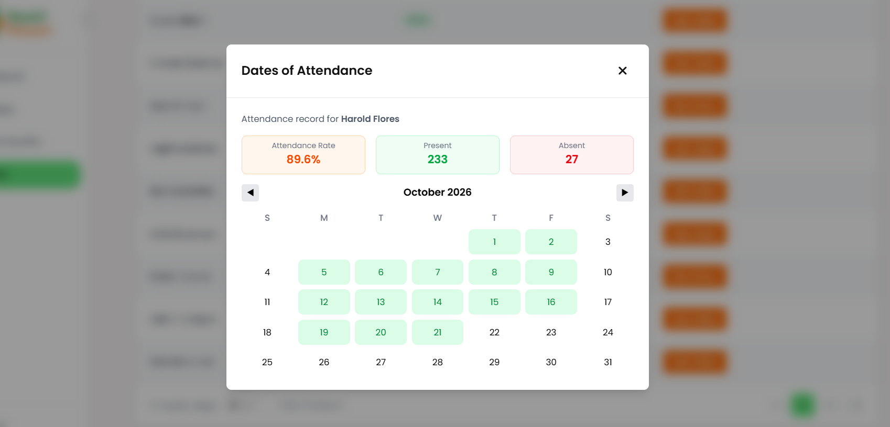
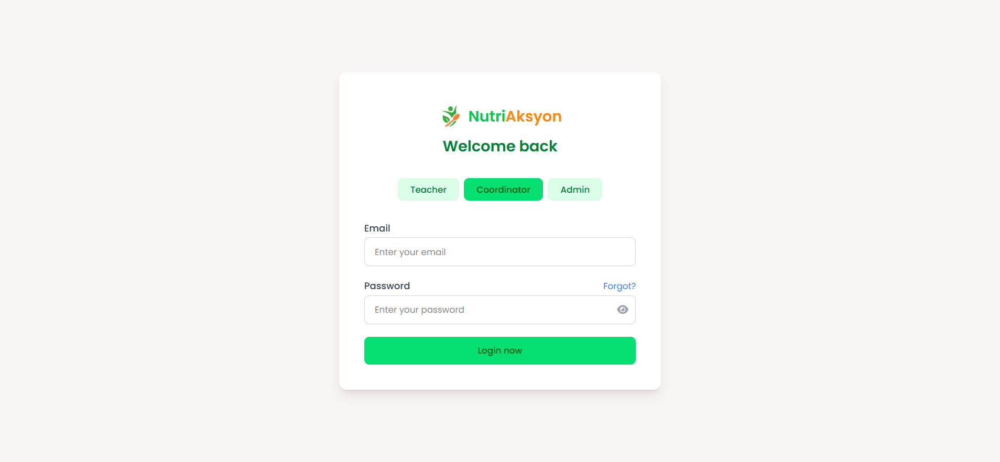

NutriAksyon is one system with four different front doors. Pick a role below to see what that role is responsible for, the sign-in screen it uses, and every module inside it.
Teacher
CLASS-LEVEL RECORDING · 5 MODULES
The teacher panel is the entry point of the whole system. It is limited to the adviser's own section, so the class list, the weighing sheet, and the reports all stay short and focused.
Dashboard, students, growth monitor, reports
Own section only
Class list import
01 · LOGIN PAGEWhat the role sees before signing in

02 · MODULE WALKTHROUGHEvery section of this role panel, in the order it appears
2.1
Dashboard
A summary of the adviser's own section: how many learners are enrolled, how many qualified for the feeding program, how many were measured, and the attendance of the last feeding session.
Class-level counts only
Shortcuts to unmeasured learners
Latest feeding session status

When you click the 'question icon' in Students Card/Table, this shows criteria on how the system evaluates the students if they qualify for the feeding program or not.

2.2
Students
Where the class list is imported. The system reads the uploaded list, computes each learner's BMI and height-for-age status, and automatically marks who qualifies for the feeding program. Qualified learners are listed in the table right after the import.
Import a class list in one step
Automatic qualification for the feeding program
Click a row to open the student profile

Import Process
Not Included Students - those who have BMI and HFA set as Normal, hence no need to include in feeding sessions.

2.3
Student profile
Opened by clicking any row in the students table. It shows the learner's BMI and HFA analysis for the current measurement, then the trend across every measurement recorded during the feeding program, including previous school years when those records exist.
BMI and HFA analysis side by side
Trend line across all measurements
Previous school years shown when available

2.4
Growth monitor
The weighing sheet. The teacher enters the height and weight of each learner in the class and submits the batch. Once submitted, the measurements update the class table, the student profiles, and the reports.
Batch entry for the whole class
Validated before saving
Feeds every chart and report

2.5
Reports
Class monitoring in one place: who among the class falls under each BMI and HFA status, and whether the class actually attends the scheduled feeding sessions.
Nutritional Status Panel

Feeding Session Attendance Panel
Upon clicking See Dates button

Feeding Coordinator
SCHOOL-WIDE FEEDING PLANNING
The coordinator panel covers the whole school. It schedules feeding sessions and growth monitoring, plans meals from the crops in stock, and exports school-wide reports.
Whole school
Calendar, meals, crops, reports
01 · LOGIN PAGEWhat the role sees before signing in

Dashboard and module walkthrough for this role will be added here.
Admin
ACCOUNTS & SCHOOL SETUP
The admin panel manages who can use the system and how the school is organised. It creates and revokes teacher and coordinator accounts, maintains grade levels and sections, and manages the school year.
Whole school
Accounts, grade levels, sections, school year
01 · LOGIN PAGEWhat the role sees before signing in
Dashboard and module walkthrough for this role will be added here.
SuperAdmin
SIGN-UP APPROVAL
The SuperAdmin panel is deliberately narrow. It only issues the sign-up tokens that admins need, so new admin accounts cannot be created without approval.
Accounts only
Token issuance
01 · LOGIN PAGEWhat the role sees before signing in
Dashboard and module walkthrough for this role will be added here.